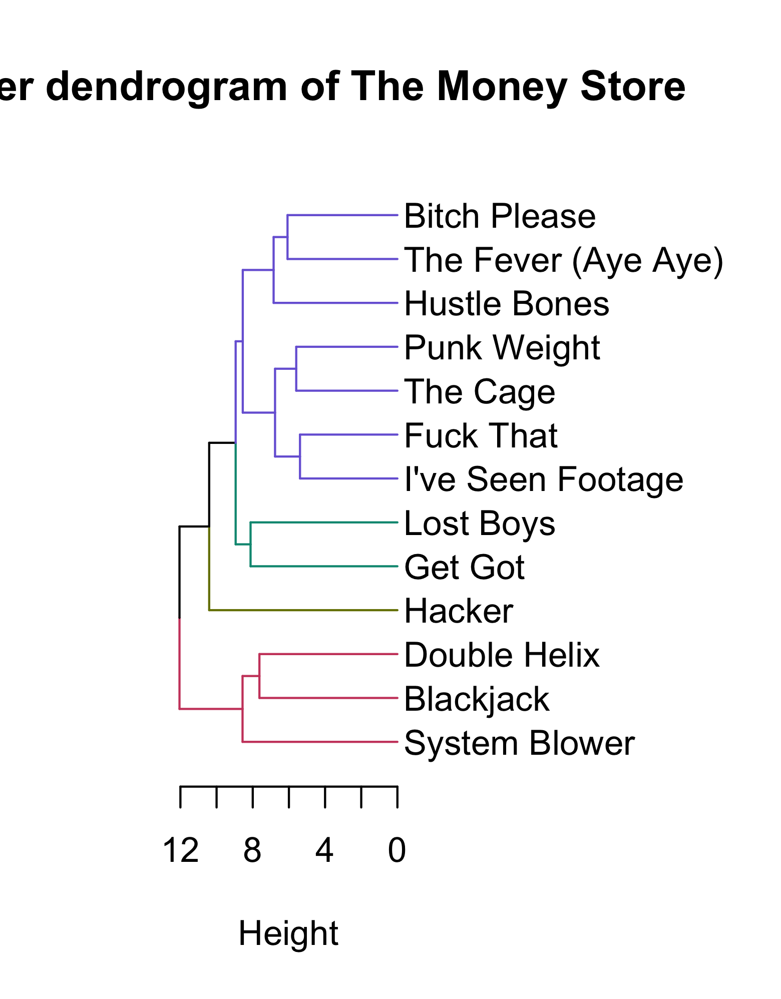
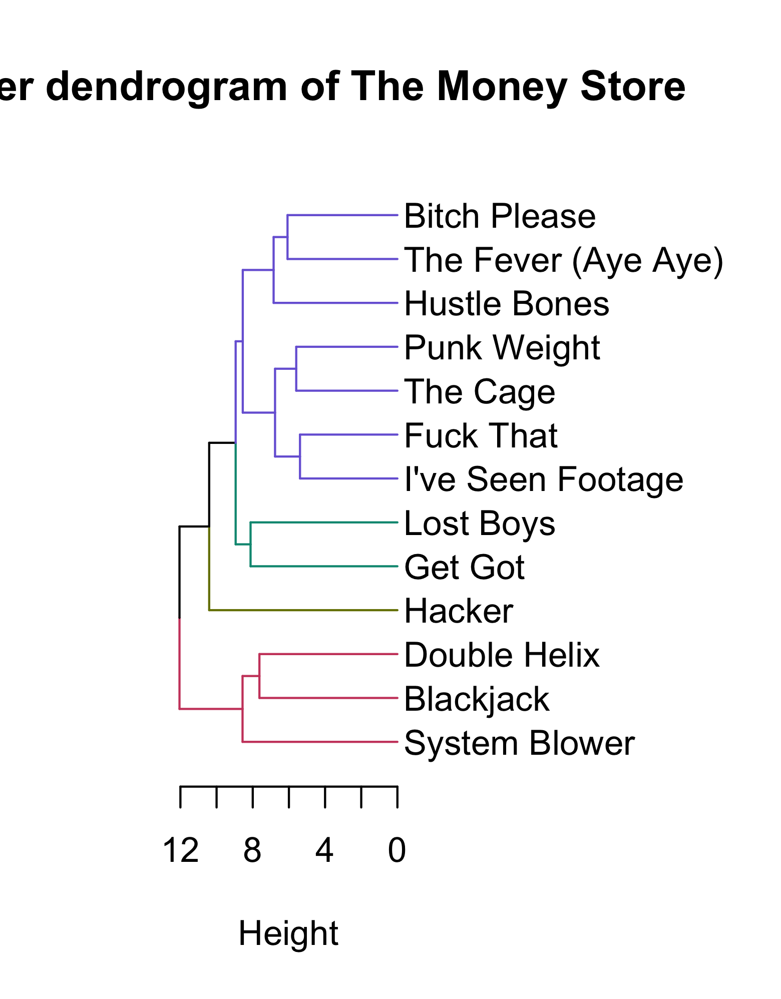
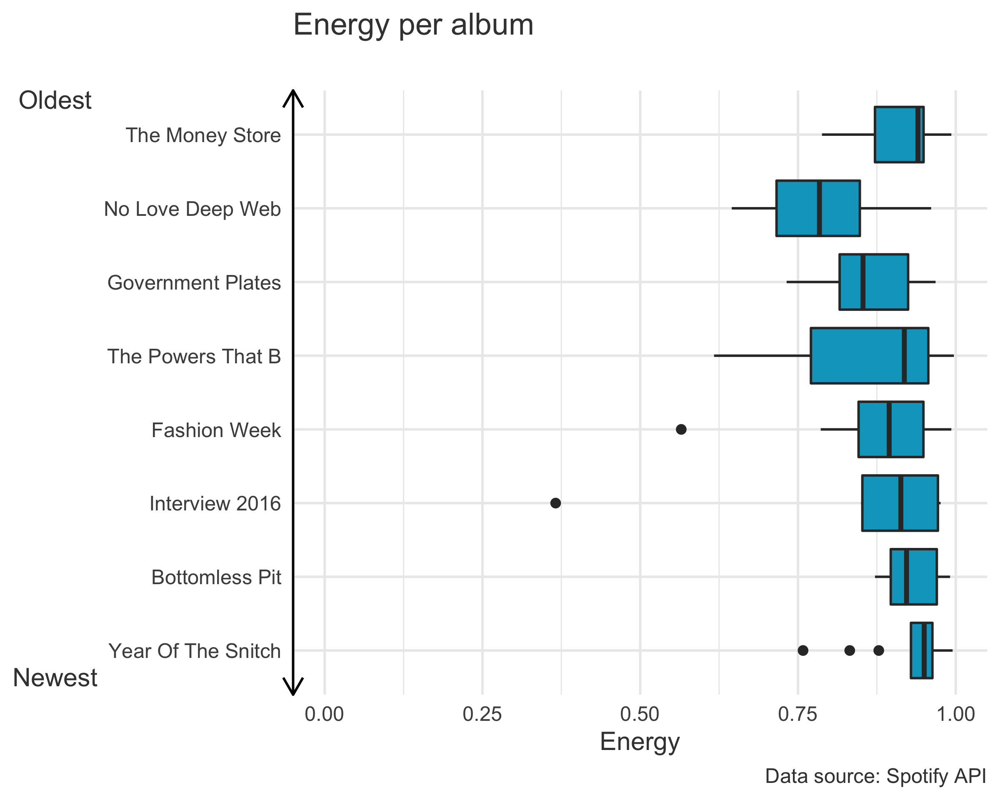
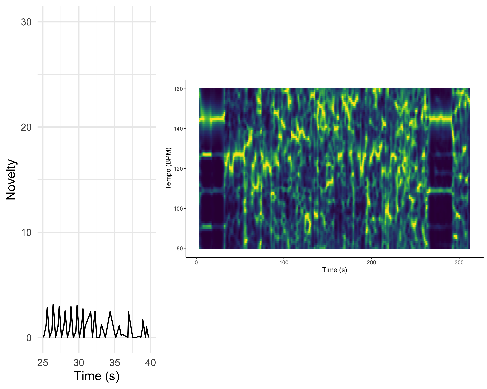
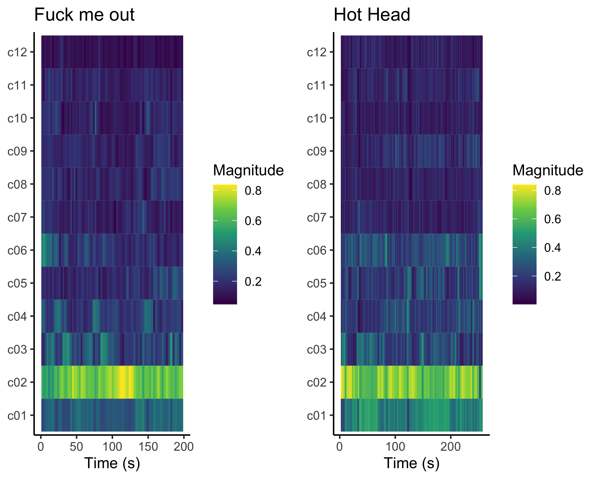
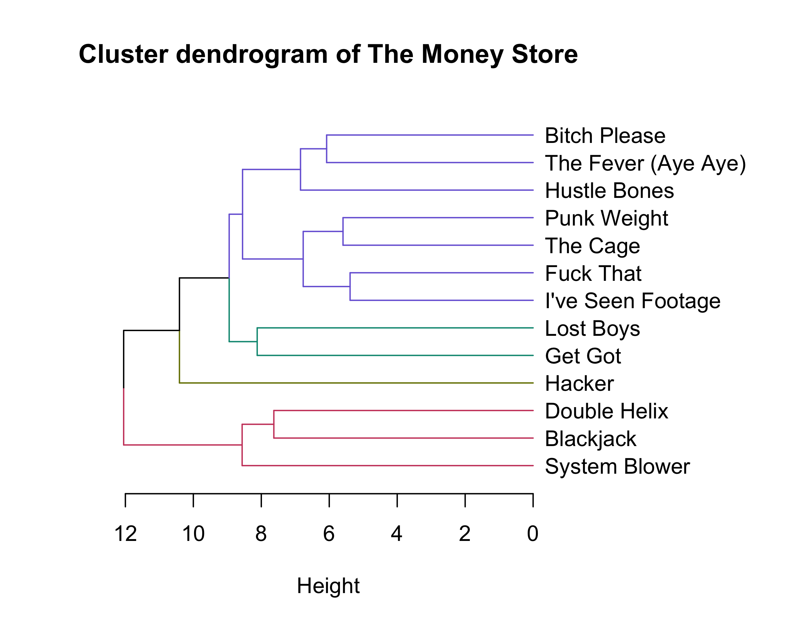

Meet Death Grips
Death Grips is an experimental hiphop band with three members: Andy Morin, Zach Hill and MC Ride. When I got introduced to their music, I hated it. However, after torturing myself for quite some time, it grew on me. Theyve also inspired great artists like David Bowie and Kanye West for the albums Black Star and Yeezus, respectively. Death Grips music is extremely energetic and, if I might say so, quite aggressive. I am sometimes unable to put my finger on their music. In most of their songs, there is so much happening at the same time: when I think I have found the rhythm, it changes again. Therefore, I am very curious what the Spotifys API would make out of Death Grips music. Therefore, the goal of this research is to analyze their music and by that, find out what makes Death Grips experimental.
In total, Death Grips released 8 albums. The Money Store (2012) is their most popular album. However, this is without taking their first album Exmilitary into account. Since it is not on Spotify, its hard to compare its popularity. For that same reason, I will unfortunately not be able to take Exmilitary into account in this research. This is a loss, since the release of Exmilitary gave them public recognition for the first time and moreover introduced the world to Death Grips refreshing blend of punk rock, hip-hop and industrial music.
Next to the seven remaining albums, I will include their EP Death Grips. This EP is also an instrumental one. Therefore, it will be valuable to expand my data. And just so it has been mentioned: one of these seven albums is actually a double album and another one is an intrumental album. With data attained by Spotifys API, I will be focussing on the following questions:
- What makes Death Grips experimental and inaccessible?
- How can we distinguish this experimentalness with the data gained from Spotifys API?
- Is their most popular music their least experimental music?
- Has Death Grips become more experimental over time?
In summary, I will be analyzing what makes Death Grips experimental. My research will be based on the data of 7 albums and 1 EP.

MC Ride
Why Death Grips gives you adrenaline

Before making this plot, I expected the energy levels of Death grips music to be high. I think their music is very energetic, sometimes even too energetic for me. Maybe this is what makes the music experimental and inaccessible.
According to the Spotify API, energy is a measure from 0.0 to 1.0 and represents a perceptual measure of intensity and activity. Typically, energetic tracks feel fast, loud, and noisy. I would agree that these three characteristics apply to Death Grips tracks.
We can see very clearly that every album has a very high mean of energy, since every box is on the far right of the plot. Even though my expectations were met, I am amazed by the extremely high energy levels. Funny enough, there is one dot at around 0.37. Apparently the song Interview E on Interview 2016 is Death Grips least energetic song.
Also, No Love Deep Web is a bit of an outlier compared to the energy levels of the rest of the albums. The median energy of this album is the lowest of all. This is their second released album. Maybe they thought they needed to refrain themselves. If that was the case, they definitely held back less from that album on: from No Love Deep Web their music got more energetic over time.
So, we can state that the remarkable high energy levels of Death Grips music is part of what makes it so aggressive and therefore experimental. This consequently means that as to energy, their most popular music is not their least experimental music. I would expect that valence also contributes to aggressiveness, so thats what well look at in the next part.
Why Death Grips does not make you much happier
Let us combine the information of the previous plot and add information of valence, instrumentalness and danceability. The graph is interactive, so try it out!
Valence
According to the Spotify API, valence is a measure from 0.0 to 1.0 describing the musical positiveness conveyed by a track. Tracks with high valence sound more positive (e.g.happy, cheerful, euphoric), while tracks with low valence sound more negative (e.g.sad, depressed, angry).
At first look, we can see that most of Death Grips songs have high energy and low valence. This makes sense, since high energy plus low valence equals aggressiveness.
A lot of the songs on Interviews 2016 end up in relatively high valence. It is an instrumental album, which would lead us to the conclusion that maybe MC Ride has a big role in making the music sad and/or angry. However, the other instrumental album Fashion Week has a much lower valence than Interviews 2016.
Most of the songs on The Powers that B have a low valence level. However, reflecting the information of the previous plot about energy, this album was also the most energetic one. Combining these plots about energy and valence makes me conclude that The Powers That B is Death Grips most aggressive album.
Danceability
According to the Spotify API, danceability describes how suitable a track is for dancing based on a combination of musical elements including tempo, rhythm stability, beat strength, and overall regularity. A value of 0.0 is least danceable and 1.0 is most danceable.
The colors in this graph represent danceability. We see that the songs with high energy and low valence have a low danceability as well. Although correlation does not imply causation, it would make sense that most songs with high energy and high valence have high danceability as well.
An outlier for this correlation is the song Runway E (2), with its high energy, low valence and high danceability. Another outlier is Runway N, with its extremely high energy, relatively high valence and low danceability.
Instrumentalness
According to Spotify API, instrumentalness predicts whether a track contains no vocals.Ooh and aah sounds are treated as instrumental in this context. Rap or spoken word tracks are clearly vocal. The closer the instrumentalness value is to 1.0, the greater likelihood the track contains no vocal content. Values above 0.5 are intended to represent instrumental tracks, but confidence is higher as the value approaches 1.0.
The size of the bubbles represent instrumentalness. The bigger the bubble, the less vocals. We can see that the bigger bubbles in this graph represent songs from mostly the instrumental albums Interviews 2016 and Fashion Week, so that makes sense.
Feature changes through time
Most popular song

Death Grips most popular song is Get Got. Its a very energetic and catchy song. Its chromagram is just as messy as the song. However, it is not weird for a chromagram of a hiphop song to look like this, since we distinguish hip-hop mostly by its rythm and thats the part that the chromagram shows least.
The first ten seconds of the song contains the most clear key of the song: A#/Bb. In this short section, we can hear one melody and MC Ride rapping.
After 10 seconds, MC Ride stops rapping and the melody changes. There is more happening in this new melody compared to the previous one.
In between 15 and 22 seconds, the chromagram shows mostly a D key. After 22 seconds, MC Ride starts rapping again over the same melody we heard in the previous section.
At 36 seconds, the melody transposes. In this section we see A#/Bb, B and C light up more, instead of A and D.
Sections 57-63 s, 101-107 s and 135-140 s look alike, since these are the sections in which we hear the (mostly vocal) chorus: get get get get got got got got We see that the chorus is in A#/Bb.
In between 63-101 s and 107-135 s we hear the main melody and MC Ride rapping.
Right after the third chorus, which in 140- s, the chorus gets repeated but with an extra drum and a hi-hat added, which is why this section is in C and C#/Db instead of A#/Bb.
Chordogram

I found out albums where MC Ride is rapping, do not work well in chordograms. Those chordograms show up almost completely dark blue. I think this is caused by the rapid- and choaticness of the music combined by the fact that
Luckily, Ive included two instrumental albums in my corpus. MC Ride may fool the chordograms, but Zach and Andy provide us more clear ones. After a long search (thanks to Death Grips for making ungraspable music), I finally found a song that shows a clear melody: Runway H.
Remember, bright yellow means that it is not that chord. Consequently, the most dark blue means it is definitely that chord. The sections with bright yellow contain a very sharp sound.
Most experimental songs (ceptsrogram)

According to a reddit discussion, it is suggested that Fuck Me Out and Hot Head are two of Death Grips most experimental songs. Lets see if we can find out why they are experimental, according to their cepstrograms.
Fuck Me Out
On first glance, it is clear that there is much going on in c02. According to the Spotify API, this second basic function emphasizes brightness. This brightness should not be confused with lightness or easy listening: In audio production brightness refers to upper mid and high frequency content. Increased levels of mid and high frequency content are referred to as brighter (Quora). I do recognize this in Fuck Me Out.
In section 0-40 seconds and section 60-90 seconds, coefficients 3 and 4 alternate. Explain
Between 100 and 130 seconds, c02 is extra bright. In this section, a hi-hat plays loud and frequently. I think this hi-hat shows in c02, because it has a high pitch and loudness, which makes it bright.
Hot Head
First, notice the similarities of the two cepstrograms. This suggests that both Fuck Me Out and Hot Head are songs with a lot of brightness. However, Hot Heads cepstrogram does differ from the one of Fuck Me Out: it bleeds out more to c01 & c03, and c06 lights up significantly more.
A relevant sidenote is that Hot Heads cepstrogram looks more detailed. Why? I think its because the song is simply longer than Fuck Me Out, almost a full minute. Therefore, there is more information in the same plot size, which makes it more detailed.
Most experimental song (self-similarity matrice)

Looks like the timbre of Fuck me Out is quite similar to itself. Notice how the section between 110 - 130 seconds lights up yellow/green. This means that this section has less similarity to the rest of the song. Weve also seen the same section light up in the previous cepstrogram. I stated that this section has a very loud and frequently played hi-hat. This type of hi-hat can only be heard in this section of the song, which causes it to be less similar to the rest of the song.
Hot Head is even more extremely self-similar than Fuck Me Out. The ending is the most unique compared to the rest of the song, because we can hear just one note getting louder and higher. This sound is heard often throughout the rest of the song, but then its probably overruled by other sounds we can hear. These other sounds are absent in the last few seconds of the song, which is why the API reads those last few seconds as less similar to the rest of the song.
Somehow I expected an experimental song to differ from itself at various moments. However, after seeing these self-similarity matrices, it makes sense. I think the songs are still very experimental, just the same experimentalness throughout the song. There is so much happening in the songs, that the fact that the same thing is happening throughout the song does not make the songs less experimental: you still wont get used to the chaotic sounds.
Novelty function

On the left we see a novelty function of loudness, of the song Up My Sleeves. A novelty (read: change) in the song, causes a peak. The higher the peak, the higher the change in, in this case, loudness.
In between 25-30 seconds, we see the same type of novelties. This is due to the fact that the sentence up my sleeves is being repeated. At 30 seconds, the vocals stop and the melody of the song starts. The novelties in between 30-40 seconds look quite irregular, the API has a hard time finding the tempo. Up My Sleeves is, once again, an energetic song with almost no silences in the main melody. There is almost no silence in between 35-40 seconds, nor in the melody. When there is music followed by silence (or the other way around), the change in loudness is high. Therefore, you would expect a high novelty when the music stops and also when it starts again. But since there are almost no silences in the melody, my expectations that the novelties in the main part of the song would not be high, were right.
On the right we see a Fourier-based tempogram of Up My Sleeves. According to the tempogram, the tempo of the song changes very often, except for the parts where the main melody is missing (0-30 seconds and 266-292 seconds). In those parts, the tempo is probably 145 beats per minute. Furthermore, the main part of the song has a bpm mostly over 100: in between 100-160 beats per minute light up the most
Clustering
Conclusion
What makes Death Grips experimental?
Weve seen that Death Grips music is energetic and sad, which equals aggressiveness. I am very convinced that this is part of what makes Death Grips experimental. Ofcourse, a lot of music is aggressive, but Death Grips introduced a new type of aggressiveness with their progressive blend of punk rock, hip-hop and industrial music.
However, their experimentalness does not show in change (novelties) or uniqueness within the songs. Weve seen that Fuck Me Out and Hot Head are very similar to themselves. Furthermore, Up My Sleeves did not contain huge novelties in loudness. I suppose that this leaves room for Death Grips to reinvent themselves and become even more experimental, inaccesible and unlistenable ;)